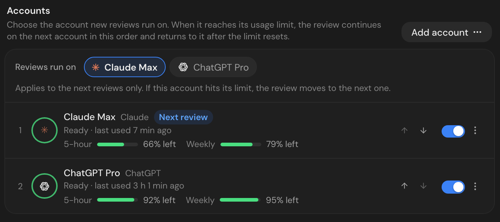

Your AI, your call
Review with Claude Code, Codex, Gemini or OpenCode, whichever you have. Pick which account the next reviews use.
Claude MaxAnthropic✓
ChatGPT PlusOpenAI
GeminiGoogle
OpenCode GoOpenCode
For indie hackers and solo SaaS builders
Every pull request reviewed by the AI account you already have, or by free models.
git clone https://github.com/BridgLabs/opencodereview && cd opencodereview && docker compose up --build5 minutes with Docker · No account, no card · Free for individuals and small companies

The real app, filled with demo data.
Works with
Shipping solo
Before and after
Fixed in 1 commit · merged at 12:06 AM · you went to sleep
Illustrated example.
Four steps, about five minutes. You never write a config file.
One Docker command starts everything. Open localhost:1421 and onboarding takes over.
Sign in with GitHub and pick the repositories. They're cloned and indexed in the background.
Sign in to Claude, ChatGPT or Gemini in the browser, or use OpenCode's free models. Every CLI ships inside the container.
Pick an open pull request. From then on, every new one is reviewed as soon as you open it.
Every review starts from an index of your codebase: who calls the changed code, which tests cover it, and the rules you've written down. Findings come with the file, the line and the fix, not a wall of nitpicks.
Review with Claude Code, Codex, Gemini or OpenCode, whichever you have. Pick which account the next reviews use.
Building with Claude all day? Add a second account. When one reaches its usage limit, the review moves to the next and comes back after the reset.

A local index of symbols and imports. Each review gets the callers and tests of the change, and nothing else.
Tell reviews what matters to you in plain Markdown, like "every Stripe handler must be idempotent". Each repository can have its own skill, and every edit is versioned.
you/saas-appcustom skill · v4you/mobilecustom skill · v2you/landingdefault skillA summary on the pull request, and each issue inline on the line it is about.
| Issue | Where | |
|---|---|---|
| ⚠️ | Webhook is not idempotent: a Stripe retry charges the customer twice | webhook.ts:42 |
| ⚠️ | Yearly price id is read from process.env without a fallback | plans.ts:12 |
Reviewed by OpenCodeReview.
Your repositories, index, sign-ins and review history live on your laptop or your own server. We have no servers to send them to.
What it costs
No seats, no tiers, no locked features. Put in your numbers and see what a hosted reviewer would add to your monthly bills.
Hosted review tools are built for engineering teams: billed per developer, running your code through their cloud. OpenCodeReview runs on the AI plan you already have.
| OpenCodeReviewSelf-hosted · source-available | CodeRabbitHosted service | GreptileHosted service | |
|---|---|---|---|
| Price | ✓Free for individuals and small companies, on your AI plan | ✕Per developer, monthly | ✕Per developer, monthly |
| Where your code runs | ✓Your machine; only your AI provider sees the diff | ✕Their cloud | ~Their cloud, or self-hosted on enterprise |
| Models | ✓Claude Code, Codex, Gemini or OpenCode | ~Vendor's choice | ~Vendor's choice |
| Usage limits | ✓Fails over across your accounts | ~Your plan's limits | ~Your plan's limits |
| Whole-repo context | ✓Local index | ✓Yes | ✓Yes |
| Source code available | ✓Yes | ✕No | ✕No |
Based on each product's public website. Plans change, so check their pricing pages for current details.
For teams
OpenCodeReview is free for individuals and companies under 100 people and $1M in revenue. Past that, your company needs a commercial license, so talk to us.
That is exactly why you need it. On a team, someone else reads your diff before it ships. Alone, nobody does. OpenCodeReview is that someone, for every pull request, in a few minutes.
It reviews pull requests. Open a branch and a pull request for each change, even if you merge it yourself ten minutes later. The review lands before you merge.
For individuals and companies under 100 people and $1M in yearly revenue, yes, including commercial use. Larger companies need a commercial license. Reviews run on your own Claude, ChatGPT or Gemini account, or on OpenCode's free models, so the only cost is what you already pay your AI provider.
Claude Pro, Max or Team through Claude Code, ChatGPT plans that include Codex, a Google account through the Gemini CLI, and OpenCode's free models or an OpenCode Go key. Local models are not supported. You can connect several accounts of each kind.
The review continues on your next account in order. The limited account rests and is used again after its window resets. Claude and ChatGPT accounts show how much usage they have left; API keys are billed by their provider.
It stays on the machine that runs OpenCodeReview. Reviews call your AI provider with your own sign-in or key, the same way its CLI does when you use it yourself.
They are hosted services billed per developer. OpenCodeReview is self-hosted with its source available, and it reviews with the AI plan you already pay for.
Reviews run while OpenCodeReview is running. For reviews around the clock, run it on any always-on machine with Docker, such as a small VPS or a home server.
Docker, a GitHub account with access to your repositories, and a Claude, ChatGPT or Gemini account. Without one, OpenCode's free models work. The Claude Code, Codex, Gemini and OpenCode CLIs ship inside the container.
Yes. Set OCR_GH_HOST to your GitHub host before starting it.
Clone it, connect GitHub and your AI account, and get your next pull request reviewed in five minutes.
5 minutes with Docker · No account, no card · Free for individuals and small companies
⚠️ OpenCodeReview found 2 issues
Reviewed
9e1c2f7. Each issue below has the details and a suggested fix.webhook.ts:42process.envwithout a fallbackplans.ts:12Reviewed by OpenCodeReview.